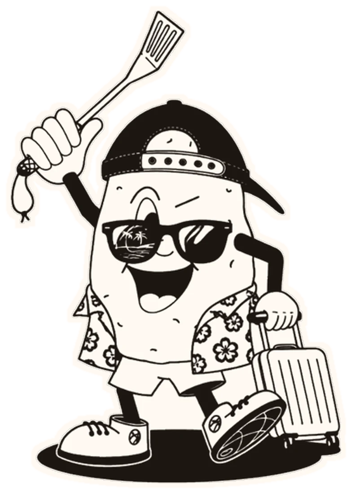
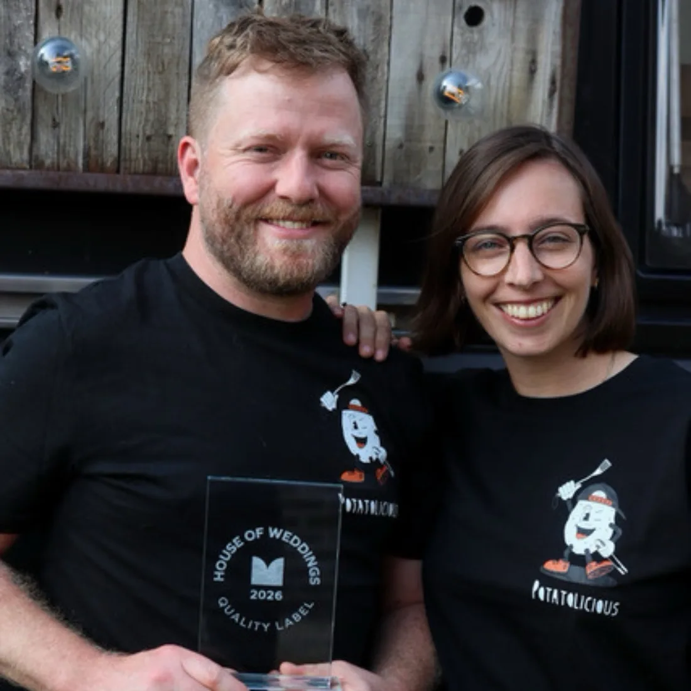
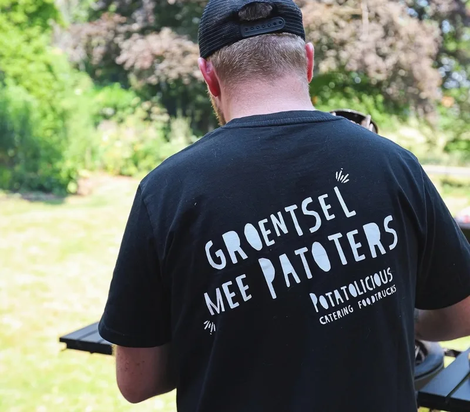

Publiekslieveling
Publiekslieveling€ 22per persoon
Loaded wedges en jacket potatoes
De aardappel in de schil, krokant vanbuiten en smeuïg vanbinnen. Of als wedges, met toppings van over de hele wereld.
2 uur all you can eat25 tot 450 gasten
Loaded wedges, jacket potatoes en BBQ van het vuur. Wouter, Gilke en hun team rijden met de foodtruck naar je trouw, je tuinfeest of je bedrijfsevent. Jij geniet mee, wij ruimen achteraf op.


Elke formule stellen we samen met jou op. Vlees, vis, veggie of vegan, en de gerechten volgen het seizoen.
PubliekslievelingDe aardappel in de schil, krokant vanbuiten en smeuïg vanbinnen. Of als wedges, met toppings van over de hele wereld.
 Kamado Joe
Kamado JoeSlow cooked ribbetjes, pulled pork, boerewors en verrassende sides, ter plaatse van de grill. Zelfs het dessert krijgt een BBQ-twist.
 Receptie
ReceptieKleine gerechtjes met de aardappel als rode draad: mini-burgers, zoete aardappel wedges, aardappelblini's met gerookte zalm.
 Lunch
LunchVoor een teamlunch of een opendeurdag: stevige burgers en gevulde wraps, snel geserveerd en zonder gedoe.
Prijzen zijn exclusief btw, vaste kosten en personeel. Alles staat netjes uitgelegd in je offerte, zonder verrassingen achteraf.
Mail je vraagEen trouw, een lentefeest in de tuin, een teambuilding of een festival. Onze uitstraling is street, onze organisatie is strak: alles staat op tijd klaar en we ruimen zelf op.
 Avondfeest binnen
Avondfeest binnen Full Fire BBQ
Full Fire BBQ Bedrijfsevent
Bedrijfsevent

Potatolicious dankt zijn naam aan het restaurant dat Wouter jarenlang runde in de Gentse studentenbuurt. Met jacket potatoes boden ze een snel, gezond en verrassend alternatief voor fastfood.
Vandaag rijden Wouter, Gilke en het team met hun foodtrucks en foodstands naar trouwfeesten, festivals en bedrijfsevents. De kern bleef hetzelfde: verse gerechten met smaken van over de hele wereld, en de aardappel altijd in de hoofdrol.
Dat schreef een klant na een afhaalmoment met loaded fries. Hieronder nog een paar reacties van feesten waar we stonden.
★★★★★“Potatolicious heeft de catering voor het lentefeest van mijn dochter verzorgd. We kozen voor een streetfood walking diner. De hapjes, voorgerechtjes en gevulde patatjes waren heerlijk!! Bedankt Wouter en Gilke.”
★★★★★“Tuinfeest gedaan met Potatolicious en zeer tevreden. Ruim aanbod van hapjes, wedges en desserts. Ook voor de kinderen. Geen opkuis nodig, ze zorgen voor alles.”
★★★★★“Wij hebben de loaded fries besteld bij een afhaalmoment.... S-U-P-E-R L-E-K-K-E-R. Echt een aanrader! De sausjes zijn de perfecte combo.”
Laat weten hoeveel gasten je verwacht, waar en wanneer. Wij komen terug met een voorstel op maat, met een foodtruck of een foodstand die past bij jouw plek.
Ik maakte deze demo voor jullie om te tonen wat er kan. Na een kort gesprek maak ik er iets veel persoonlijkers van, helemaal naar jullie wens.
Vrijblijvend. Ik kom langs of we bellen.
Op maat, op jullie eigen domein.
Geen voorschot. Jullie betalen pas als alles klaar is.
Hosting, domeinnaam en kleine wijzigingen, zoals nieuwe openingsuren.
Omdat een voorbeeld meer zegt dan een mail. Zo zien jullie meteen wat er kan, en het kost jullie niets.
Nee. Het gesprek is vrijblijvend. Vinden jullie het niks, dan is het daarmee gedaan.
Na ons gesprek staat jullie site binnen 10 tot 14 dagen online.
Zeker. Jullie domeinnaam kan gewoon blijven, de nieuwe site komt in de plaats van de oude.
Nee, dat doe ik op basis van ons gesprek. Eigen foto's zijn mooi meegenomen, maar niet nodig om te starten.